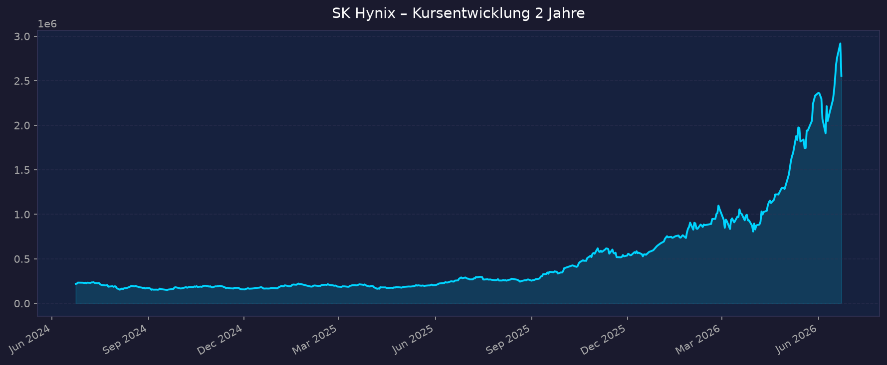
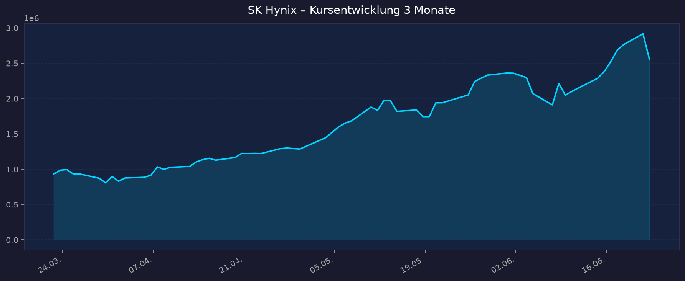

Börse: KRX (Korea Exchange) · Währung: KRW · GICS-Sektor: Information Technology / Memory
Die Stammaktie (000660, KRX) ist über deutsche Broker meist nur außerbörslich (OTC) bzw. über das US-Pink-Sheet-Symbol HXSCL handelbar — geringe Liquidität, breite Spreads. Ein regulärer Nasdaq-ADR wird für ~August 2026 erwartet (SEC-Freigabe lt. Reuters in der Woche des 22.06.2026 möglich, ggf. schon ab Mitte Juli). Erst danach dürfte ein liquider, regulierter Zugang für Privatanleger bestehen. Volumen ($-Ziel der ADR-Emission: bis ~14 Mrd. USD).
📈 1. Kursentwicklung
Aktueller Kurs: ~2.555.000 KRW | Veränderung heute (23.06.): −12 % (Crash, KOSPI −10 %, Circuit Breaker ausgelöst) Allzeithoch: 2.945.000 KRW am 22.06.2026 (Vortag) — Rekordhoch unmittelbar vor dem Absturz
Chart – 2 Jahre

Chart – 3 Monate

| Zeitraum | Kurs Start | Kurs Ende | Veränderung |
|---|---|---|---|
| 2 Jahre | ~219.600 KRW | ~2.555.000 KRW | ca. +1.060 % |
| 3 Monate | ~932.800 KRW | ~2.555.000 KRW | ca. +174 % |
| 1 Jahr | — | — | ca. +1.025 % (lt. Marktdaten) |
| 52-Wochen-Hoch | — | 2.945.000 KRW (22.06.2026) | — |
| 52-Wochen-Tief | — | ~245.000 KRW | — |
Einordnung: Extrem zyklische, aggressive Kursentwicklung. Verzehnfachung in 12–24 Monaten, getrieben vom HBM-/AI-Memory-Supercycle. SK Hynix hat im AI-Boom Samsung als wertvollstes Unternehmen Südkoreas überholt (Marktkap. zeitweise > 1 Bio. USD, Peak ~1,35 Bio. USD am 22.06.). Der heutige Einbruch von −12 % zeigt die Kehrseite der hohen Zyklik und Bewertung. Kurs interaktiv: https://www.tradingview.com/symbols/KRX-000660/
💹 2. KGV-Entwicklung (Kurs-Gewinn-Verhältnis)
Aktuelles KGV: je nach Quelle ~20 (trailing) bis ~28 (TTM); Forward-KGV ~6,4 (sehr niedrig wegen explodierender Gewinnerwartung)
| Zeitraum | KGV | Einordnung |
|---|---|---|
| Aktuell (TTM) | ~20–28 | Trotz Kursverzehnfachung moderat, da Gewinn 2025 +117 % |
| Forward (2026e) | ~6,4 | Optisch billig — hängt voll an HBM-Gewinnannahmen |
| Peak (März 2026) | ~26,1 | Höchststand im Aufschwung |
| vor 12 Monaten | nicht verfügbar | — |
| vor 24 Monaten | nicht verfügbar (zyklisches Tief, teils negativ in Verlustphasen) | — |
Bewertung: Das niedrige Forward-KGV täuscht über die Zyklik hinweg: In Memory-Abschwüngen kann der Gewinn einbrechen, wodurch das KGV explodiert oder negativ wird. Das aktuelle TTM-KGV ist für einen Halbleiterführer im Boom nicht extrem teuer — die Hauptfrage ist die Nachhaltigkeit der 72 %-Margen.
💰 3. Sales Multiple (Kurs-Umsatz-Verhältnis / P/S)
Aktuelles P/S-Verhältnis: ~10 (TTM)
| Zeitraum | P/S Ratio | Einordnung |
|---|---|---|
| Aktuell | ~10 | Hoch für Memory-Hersteller (historisch eher 1–3) |
| vor 3 Monaten | nicht verfügbar | — |
| vor 12 Monaten | nicht verfügbar | deutlich niedriger (Kurs ~1/10) |
| vor 24 Monaten | nicht verfügbar | — |
Trend: Stark steigend. Ein P/S von ~10 ist für einen klassisch zyklischen Memory-Produzenten ungewöhnlich hoch und nur durch die außergewöhnlichen HBM-Margen und das Quasi-Monopol bei Nvidia-HBM4 zu rechtfertigen. Bewertungsrisiko bei Margennormalisierung.
📊 4. Handelsvolumen (Trading Volume)
| Zeitraum | Ø Tagesvolumen | Auffälligkeiten |
|---|---|---|
| 3-Monats-Durchschnitt | nicht verfügbar (präzise) | erhöht durch Rally |
| 2-Jahres-Durchschnitt | nicht verfügbar (präzise) | — |
| Volumen-Peak (2J) | 23.06.2026 | massiver Volumenanstieg durch Crash & Circuit Breaker |
Volumentrend: Stark steigendes Interesse. Der heutige Crash (−12 %) ging mit Panikverkäufen, Zwangsliquidationen gehebelter Halbleiter-Finanzprodukte und einem KOSPI-Circuit-Breaker einher — typisches Kapitulationsvolumen. Präzise Volumenzahlen über deutsche Quellen für die KRX-Stammaktie nicht zuverlässig verfügbar.
🏦 5. Insider Trades (letzte 2 Jahre)
Daten nicht verfügbar. SK Hynix ist eine koreanische KRX-Aktie; es besteht keine SEC-Form-4-Meldepflicht, daher liefern OpenInsider/Finviz/SEC Edgar keine Insider-Transaktionen. Koreanische FSS/DART-Meldungen wurden im Rahmen dieser Analyse nicht ausgewertet.
3-Monats-Überblick: nicht verfügbar 2-Jahres-Überblick: nicht verfügbar
Quelle: nicht verfügbar (keine US-Insider-Meldepflicht)
🩳 6. Short-Positionen
Aktuelle Short Quote: nicht verfügbar (Finviz/US-Short-Daten existieren für die KRX-Stammaktie nicht; koreanische Leerverkaufsdaten der KRX wurden nicht abgerufen)
| Zeitraum | Short Interest | Veränderung |
|---|---|---|
| Aktuell | nicht verfügbar | — |
Einschätzung: Belastbare Short-Interest-Daten nach US-Standard liegen nicht vor. Allgemein gilt: Bei dem heutigen Crash dürften Leerverkäufer und die Zwangsliquidation gehebelter Produkte eine Rolle gespielt haben.
🗞️ 7. Aktuelle Nachrichten
| Datum | Quelle | Nachricht | Relevanz |
|---|---|---|---|
| 23.06.2026 | CNBC / TradingKey | SK Hynix −12 %, KOSPI −10 %, Circuit Breaker; globaler Tech-Selloff | Hoch |
| 23.06.2026 | Cryptobriefing | Südkoreanische Aktien −9 %, angeführt von Samsung & SK Hynix | Hoch |
| 23.06.2026 | Yahoo Finance | Broadcom-getriebener AI-Selloff; Sorge um AI-Wettbewerb nach Google-Führungsabgängen; Regulierung gehebelter Halbleiter-Produkte | Hoch |
| 22.06.2026 | Yahoo Finance | Allzeithoch 2.945.000 KRW; größtes Unternehmen Südkoreas (vor Samsung) | Hoch |
| ~Juni 2026 | Reuters / Quartz | Nasdaq-ADR ~August 2026 geplant, SEC-Freigabe ggf. Woche des 22.06.; Volumen bis ~14 Mrd. USD | Hoch |
| 23.04.2026 | Digitimes / PRNewswire | Q1 2026: Rekordumsatz 52,6 Bio. KRW, 72 % Op.-Marge, Gewinn verdoppelt q/q | Hoch |
| ~Q1 2026 | Abhishek Gautam | HBM-Bestellungen übersteigen 3-Jahres-Produktionskapazität | Hoch |
| Jan 2026 | TechPowerUp | HBM4-Ramp von Q2 auf Q3 2026 verschoben (HBM3E-Nachfrage bindet Kapazität) | Mittel |
| Jan 2026 | financialcontent | 16-Layer HBM4 auf CES 2026 vorgestellt | Mittel |
| 19.06.2026 | Motley Fool | SK Hynix mit Warnung für Micron-Investoren (Wettbewerb) | Mittel |
Sentiment: Fundamental stark positiv (Rekordzahlen, HBM-Führung, US-Listing), kurzfristig jedoch durch den heutigen Crash und AI-Bewertungssorgen abrupt negativ umgeschlagen. Hohe Volatilität.
📋 8. Letzte 3 Quartalsberichte
Q1 2026 (jüngstes Quartal)
| Kennzahl | Ist | Erwartung | Abweichung |
|---|---|---|---|
| Umsatz (Revenue) | 52,58 Bio. KRW | nicht verfügbar | +60 % q/q, +198 % YoY |
| Betriebsgewinn | 37,61 Bio. KRW | nicht verfügbar | Op.-Marge 72 % (Allzeithoch) |
| Nettogewinn / -marge | 40,35 Bio. KRW / 77 % | — | — |
| Free Cashflow | nicht verfügbar | — | — |
Guidance: HBM-Kundennachfrage übersteigt geplante Kapazität der nächsten 3 Jahre; HBM4E-Samples 2. Halbjahr 2026, Massenproduktion 2027. M15X-Fab beschleunigt HBM-Capex. Kursreaktion: Teil der anhaltenden Rally Richtung Allzeithoch im Juni — präzise Tagesreaktion nicht verfügbar.
Q4 2025
| Kennzahl | Ist | Erwartung | Abweichung |
|---|---|---|---|
| Umsatz (Revenue) | 32,83 Bio. KRW | übertroffen | — |
| Betriebsgewinn | 19,17 Bio. KRW | übertroffen | +137 % YoY |
| Nettomarge | nicht verfügbar | — | — |
| Free Cashflow | nicht verfügbar | — | — |
Guidance: Fortsetzung des HBM-getriebenen Memory-Supercycles; Engpässe bis 2027+. Kursreaktion: nicht verfügbar (positiv im Aufwärtstrend).
Q3 2025
| Kennzahl | Ist | Erwartung | Abweichung |
|---|---|---|---|
| Umsatz (Revenue) | 24,45 Bio. KRW | nicht verfügbar | — |
| Betriebsgewinn | 11,38 Bio. KRW | nicht verfügbar | Op.-Marge 47 %, +24 % q/q, +62 % YoY (Allzeithoch) |
| Nettogewinn / -marge | 12,60 Bio. KRW / 52 % | — | — |
| Free Cashflow | nicht verfügbar | — | — |
Guidance: Rekord-Betriebsgewinn, starke HBM-Nachfrage. Kursreaktion: nicht verfügbar (positiv).
Kontext FY2025: Umsatz 97,15 Bio. KRW (+47 %), Betriebsgewinn 47,21 Bio. KRW (49 % Marge), Nettogewinn 42,95 Bio. KRW (+117 %) — Rekordjahr.
🌍 9. Marktkontext & Wettbewerb
Markt / Branche: DRAM- und HBM-Speicher (High Bandwidth Memory) für AI-Server. HBM-TAM: ~35 Mrd. USD (2025) → BofA-Schätzung ~54,6 Mrd. USD (2026, +58 %) → ~100 Mrd. USD (2028, ~40 % CAGR). 2026 gilt als „Memory-Supercycle" (BofA: DRAM-Umsatz +51 %, ASP +33 % YoY). Die drei Großen (Samsung, SK Hynix, Micron) kontrollieren ~90–95 % der globalen DRAM-Kapazität.
| Wettbewerber | Stärke | Schwäche |
|---|---|---|
| SK Hynix | HBM-Führer (~57–62 % Anteil; ~70 % von Nvidias HBM4/Rubin), höchste Margen, Nvidia-Hauptpartner | Hohe Zyklik, Klumpenrisiko Nvidia, hohe Bewertung |
| Samsung | Größter DRAM-Anbieter (~38 % DRAM-Anteil), Kapital, vertikale Integration | Bei HBM hinterher, Aufholjagd bei HBM4 |
| Micron | Einziger US-Anbieter (~20 % DRAM), HBM-Kapazität 2026 ausverkauft, geopolitisch begünstigt | Kleinerer HBM-Anteil (~18 % HBM4), Technologierückstand |
Branchentrends: (1) AI-getriebener HBM-Supercycle mit mehrjähriger Knappheit (Kapazität aller Anbieter für 2026 vorverkauft, Engpässe bis 2027+). (2) Margenexpansion durch ASP-Anstieg und Produkt-Mix-Verschiebung zu HBM. (3) Übergang HBM3E → HBM4/HBM4E (Nvidia Rubin), wobei SK Hynix den HBM4-Ramp von Q2 auf Q3 2026 verschob.
Marktposition: Klarer Technologie- und Marktführer bei HBM mit Quasi-Monopol bei Nvidia. Strukturell stärkste Position der Branche, höchste Profitabilität.
Risiken aus dem Marktumfeld: (1) Memory-Zyklus — historisch heftige Abschwünge mit Preisverfall und Margenkollaps. (2) Bewertungs-/AI-Blasen-Risiko — heutiger Crash zeigt Sensitivität gegenüber AI-Sentiment. (3) Klumpenrisiko Nvidia — Nachfragekonzentration. (4) Geopolitik — Korea-China-Spannungen, Exportkontrollen, China-Engagement. (5) Wettbewerb — Samsung/Micron könnten HBM-Lücke schließen und Margen drücken.
📝 Gesamteinschätzung
Stärken:
- HBM-Weltmarktführer (~57–62 %), ~70 % von Nvidias HBM4 — strukturelles Quasi-Monopol im AI-Memory
- Außergewöhnliche Profitabilität: Q1 2026 mit 72 % Op.-Marge, Umsatz +198 % YoY
- Mehrjährige Auftragslage: Kapazität für 3 Jahre vorverkauft, Engpässe bis 2027+
- Forward-KGV optisch niedrig (~6,4); geplanter Nasdaq-ADR verbreitert Investorenbasis
- Rekord-Bilanzjahr 2025 (Gewinn +117 %)
Risiken:
- Extrem zyklisches Geschäft — Memory-Abschwünge historisch brutal
- Hohe Bewertung (P/S ~10) nach Verzehnfachung; heutiger −12 %-Crash unterstreicht Volatilität
- Klumpenrisiko Nvidia; AI-Capex-Abhängigkeit
- Geopolitik (Korea/China, Exportkontrollen)
- Für DE-Anleger aktuell nur OTC/illiquide handelbar
Fazit: SK Hynix ist der fundamental stärkste Profiteur des AI-Memory-Supercycles mit branchenführender HBM-Position und Rekordmargen. Gleichzeitig ist es ein hochzyklischer, aggressiver Wert, dessen Bewertung stark an der Nachhaltigkeit der HBM-Sonderkonjunktur hängt — der heutige −12 %-Crash direkt nach dem Allzeithoch illustriert das Risiko. Für risikobereite Anleger ein Kernprofiteur des AI-Themas; Einstieg und Handelbarkeit (OTC bis zum erwarteten Nasdaq-ADR ~Aug 2026) sind kritisch zu prüfen.
🎯 Ranking-Einordnung
Bewertung nach 5 Kriterien (Punkte 1–10, gewichtet)
| Kriterium | Gewicht | Punkte (1–10) | Gewichtet | Begründung |
|---|---|---|---|---|
| Marktposition / Burggraben | 25 % | 9 | 2,25 | HBM-Quasi-Monopol, ~70 % Nvidia HBM4 |
| Wachstum / Momentum | 25 % | 9 | 2,25 | Umsatz +198 % YoY, 3 Jahre vorverkauft |
| Profitabilität / Bilanz | 20 % | 9 | 1,80 | 72 % Op.-Marge, Rekordgewinne |
| Bewertung | 15 % | 5 | 0,75 | P/S ~10 hoch, Forward-KGV optisch billig, aber zyklikabhängig |
| Risiko / Stabilität | 15 % | 3 | 0,45 | Extrem zyklisch, hohe Vola, Nvidia-/Geo-Klumpenrisiko, nur OTC |
| Gesamt-Score | 100 % | — | 7,50 / 10 | Starkes Profil, durch Zyklik/Bewertung gedämpft |
Szenarien 2031 (5-Jahres-Horizont, Basis ~2.555.000 KRW)
| Szenario | Annahme | Kursziel 2031 | Potenzial |
|---|---|---|---|
| 🐻 Bär | Memory-Zyklus dreht, HBM-Margen kollabieren, Wettbewerb holt auf | ~1.200.000 KRW | ca. −53 % |
| 📊 Base | HBM-Führung hält, normalisierte aber solide Margen, AI-Wachstum stetig | ~4.000.000 KRW | ca. +57 % |
| 🚀 Bull | AI-Supercycle hält an, HBM4/4E-Dominanz, Nasdaq-Premium, Margen hoch | ~6.500.000 KRW | ca. +154 % |
5-Jahres-Potenzial-Spanne: ca. −53 % bis +154 % — hohe Streuung spiegelt die Zyklik wider.
Teil der Shortlist: 00_Momentum-Aktien USA-EU-Asien – 5-Jahres-Shortlist 2026-06-23
Datenquellen: Yahoo Finance · Google Finance · stockanalysis.com · CNBC · Reuters/Quartz · Cryptobriefing · TradingKey · Digitimes · PRNewswire · SK Hynix Newsroom · Counterpoint · Bank of America · TrendForce · TechPowerUp · Motley Fool Stand: 2026-06-23. Keine Anlageberatung — rein informative Auswertung öffentlicher Daten. Zahlen teils quellenabhängig schwankend (HBM-Anteil 57–62 %), Fehlendes als „nicht verfügbar" markiert.